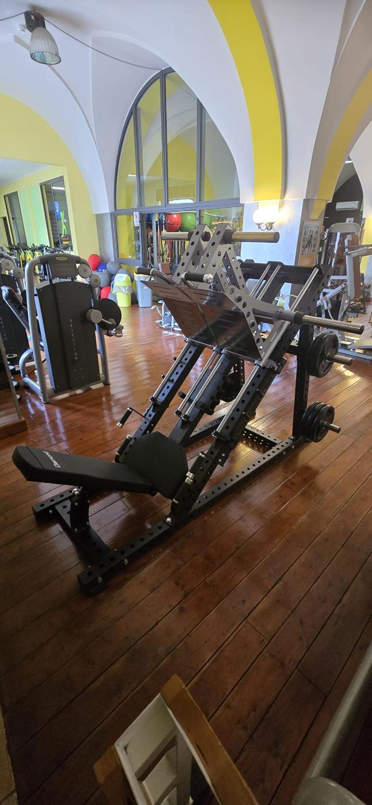
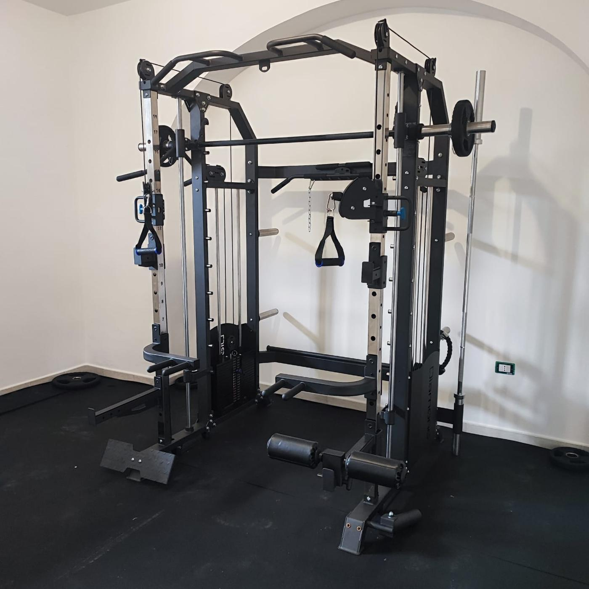
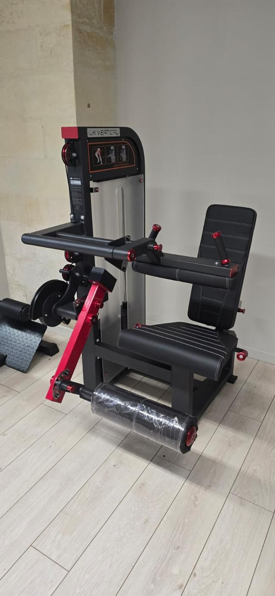
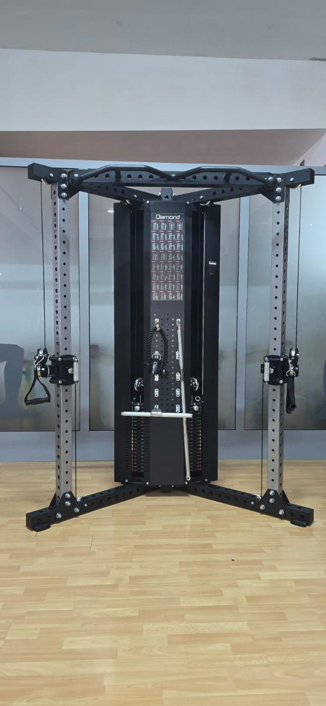

Chi lavoracon le macchine,lavora con noi.
Ogni settore ha esigenze diverse. Le conosciamo e organizziamo l'assistenza di conseguenza.

Palestre e centri fitness
Sale piene, macchine sempre pronte
In palestra un tapis roulant fermo si nota subito. Allestiamo nuove aperture, ampliamo le sale esistenti e teniamo in funzione ogni macchina con contratti di assistenza su misura.

Home gym
La palestra di casa, montata bene
Montiamo rack, macchine multifunzione e cardio direttamente a casa tua, con pavimento in gomma e regolazioni. E se qualcosa si guasta, interveniamo.
Centri benessere e SPA
Un'area wellness sempre efficiente
Installazione e assistenza per centri benessere e SPA di hotel, palestre e strutture private, con la stessa rapidità d'intervento.

Studi medici privati e fisioterapia
Attrezzature affidabili per chi cura
Per studi medici, centri di riabilitazione e fisioterapia montiamo e manteniamo le attrezzature, con interventi rapidi per non fermare le terapie.

Studi di personal training
Spazi piccoli, attrezzatura scelta
Negli studi privati ogni macchina conta. Allestiamo spazi compatti e li manteniamo efficienti, appuntamento dopo appuntamento.